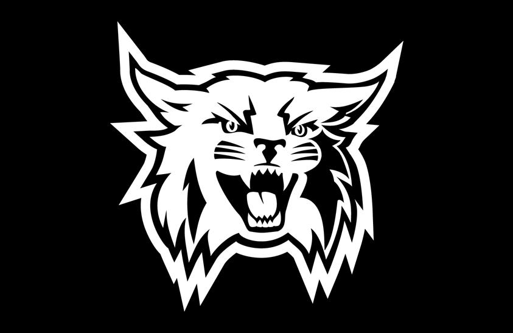
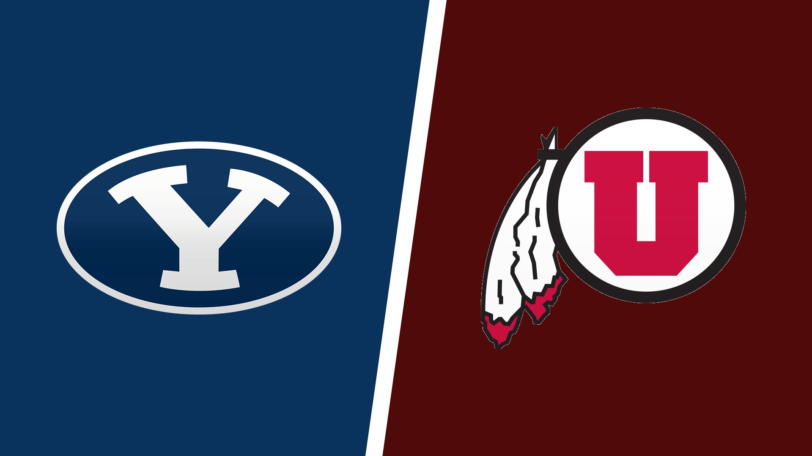

I am a big fan of football, I enjoy watching college and the NFL. My favorite NFL team is the Philadelphia Eagles, while college I root for Weber, BYU, and the UofU, all three colleges have some kind of association to my family so that's why I root for them. As for the Eagles, when my dad was trying to get me into football we were trying to decide what team I could root for, during that time my favorite animal was an eagle, so that was the day I became a fan of the Eagles. I am really a fan of any football though, I actually got to see my first ever in person football game when Weber played portland state recently, we unfortunately lost, but it was a very offensive fun game, making it a great event to experience. After I graduate my goal is to make it to an Eagles game in Philadelphia, as well as check out some landmarks I want to see, like the liberty bell and steps from the Rocky movies.

